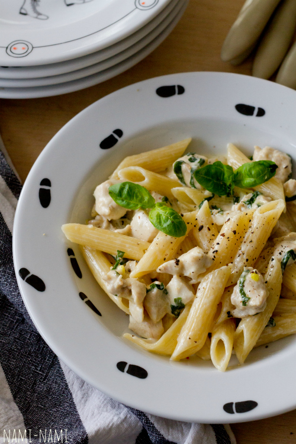

Makaronid kana-koorekastmes

Koostisosad
| Koostisosad |
Kogus |
| makaronid |
400 g |
| kanafilee |
500 g |
| õli |
2 sl |
| küüslauk |
2 küünt |
| 35% rõõska koort |
4 dl |
| riivitud parmesan |
100g |
| basiilik või petersell |
vastavalt soovile |
| sool ja pipar |
vastavalt soovile |
Juhised
- Lõika kana rinnafilee või kintsuliha väikesteks tükkideks või peenikesteks ribadeks. Haki küüslauk. Riivi vajadusel juust. Haki basiilik või rebi basiilikulehed väiksemateks tükkideks.
- Kuumuta suures potis vesi keemiseni, et saaks sinna hiljem makaronid lisada.
- Kuumuta suurel paksupõhjalisel praepannil õli keskmisel kuumusel. Lisa jaokaupa kanatükid (kõike korraga lisades jahtub pann liialt maha) ning prae segades, kuni kanatükid on kenasti jumekad.
- Maitsesta soola-pipraga, siis lisa pannile küüslauk ja prae veel minut aega.
- Nüüd kalla pannile rõõsk koor, sega läbi, alanda kuumust ja jäta kaste podisema. (Kui kasutad kuivatatud basiilikut, siis lisa see ka nüüd).
- Keeda makaronid samal ajal al dente. Kui makaronid on valmis, siis kurna ja lisa kohe kana-koorekastme hulka, lisa ka juust ja basiilik. Sega õrnalt läbi, lase veel mõned minutid haududa ja serveeri.
- Serveerimisel puista peale veel värsket peterselli ja riivitud juustu, soovi korral jahvata veskist veidi musta pipart ka juurde.